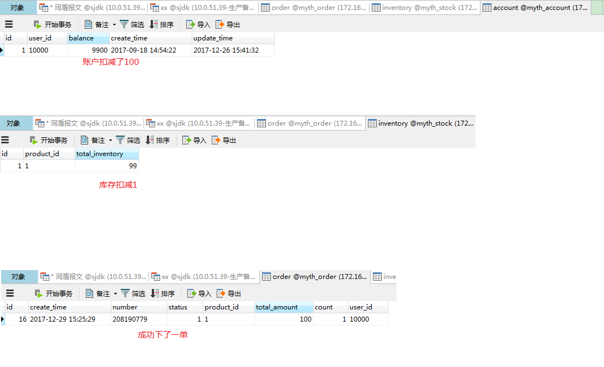

在上一篇中，我们项目所需的整个环境都已搭建完成，下面我们主要介绍项目的相关配置于启动环节
注意： 这里事务存储我们这里采用的是 ： mysql， 消息中间件选择的是：rocketmq, 其他方式都大同小异，童鞋们可自行体验哈~
1、myth-demo-springcloud-account -- application.yml 修改点1： 修改业务库mysql数据库服务ip地址，用户名和密码，这里我的rocketmq部署在虚拟机，mysql不是在本机 spring: datasource: driver-class-name: com.mysql.jdbc.Driver url: jdbc:mysql://127.0.0.1:3306/myth_account?useUnicode=true&characterEncoding=utf8 username: root password: 123456 修改点2：修改rocketmq服务ip地址，这里为消费者 rocketmq: namesrvAddr: 192.168.156.101:9876 consumerGroupName: account instanceName: account -- applicationContext.xml 修改myth分布式事务消息数据库ip地址，用户名和密码 <property name="mythDbConfig"> <bean class="com.github.myth.common.config.MythDbConfig"> <property name="url" value="jdbc:mysql://127.0.0.1:3306/myth?useUnicode=true&characterEncoding=utf8"/> <property name="driverClassName" value="com.mysql.jdbc.Driver"/> <property name="password" value="123456"/> <property name="username" value="root"/> </bean> </property> 2、myth-demo-springcloud-inventory -- application.yml #修改同myth-demo-springcloud-account 类似 -- applicationContext.xml #修改同myth-demo-springcloud-account 类似 3、myth-demo-springcloud-order --application.yml #mysql配置同myth-demo-springcloud-account 类似, 区别在于这里没有rocketmq配置项，单独分离出spring-rocketmq.xml中配置 --applicationContext.xml #修改同myth-demo-springcloud-account 类似 --spring-rocketmq.xml # 生产者 <bean id="defaultMQProducer" class="org.apache.rocketmq.client.producer.DefaultMQProducer" init-method="start" destroy-method="shutdown"> <constructor-arg name="producerGroup" value="producerGroup" /> <property name="namesrvAddr" value="192.168.156.101:9876" /> <property name="retryTimesWhenSendFailed" value="10" /> </bean>
执行myth-demo-springcloud-eureka项目中的EurekaServerApplication类的main方法， 启动eureka注册中心。
执行SpringcloudOrderApplication、SpringCloudAccountApplication、SpringCloudInventoryApplication、中的main方法， 启动前确保rocketmq服务已启动。
myth-demo-motan、myth-demo-dubbo的配置与启动类似，这里不再赘述哈~~
访问order服务，http://localhost:8884/swagger-ui.html 这是订单下单入口， 现在可以体验Springcloud分布式事务啦。
点击“Try It out!”,查看各表数据变化情况

到现在我们已经狠狠地完了一把，后面将正式进入源码解析部分 ~~
大家有任何问题或者建议欢迎沟通 ，欢迎加入QQ群：162614487 进行交流